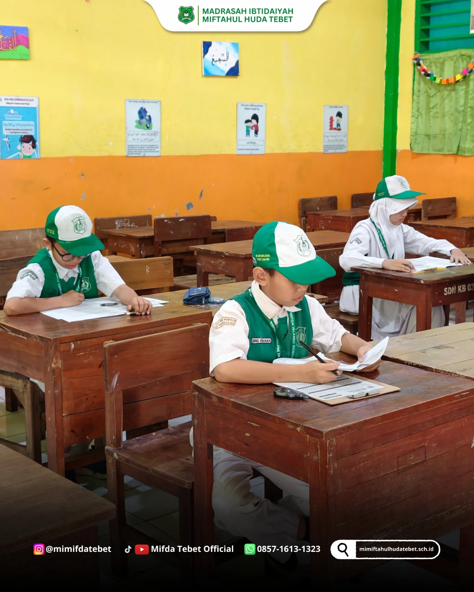
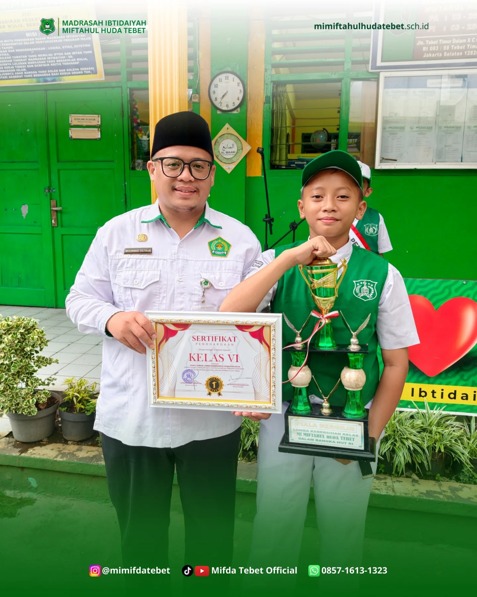
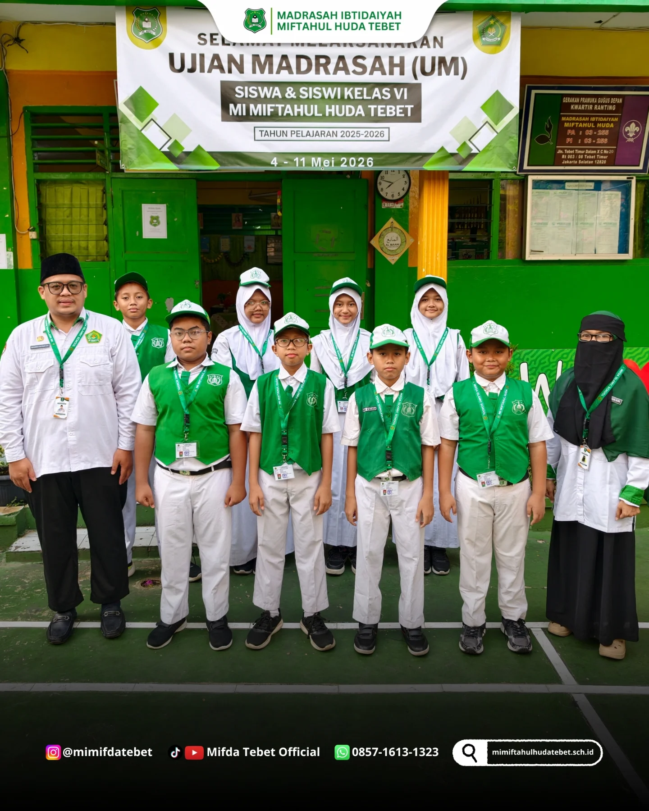
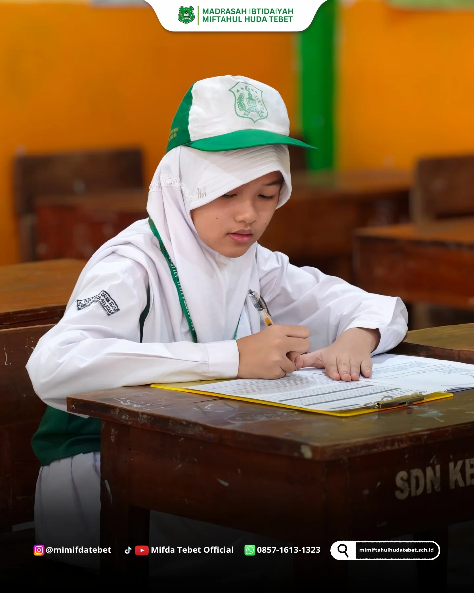
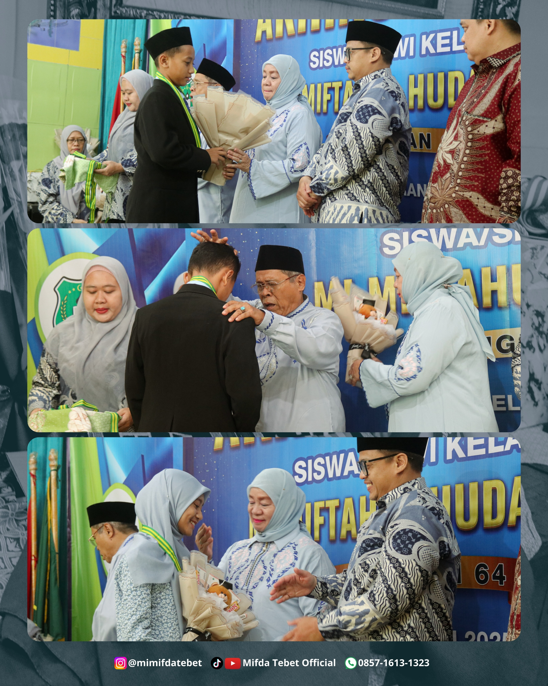
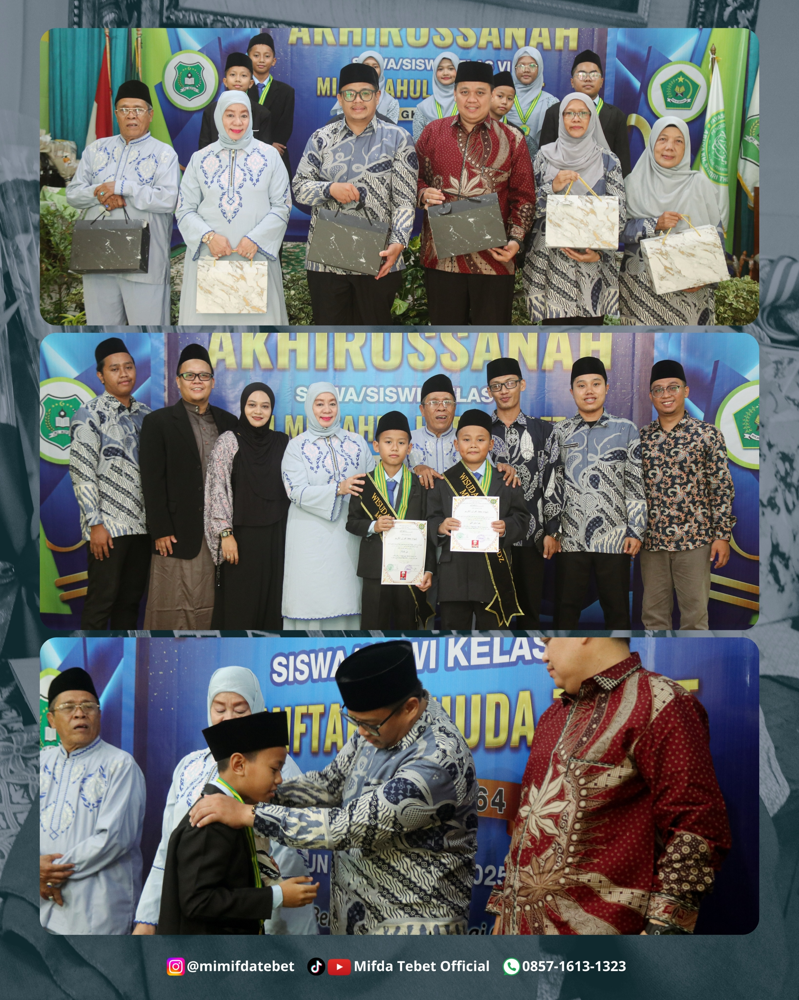
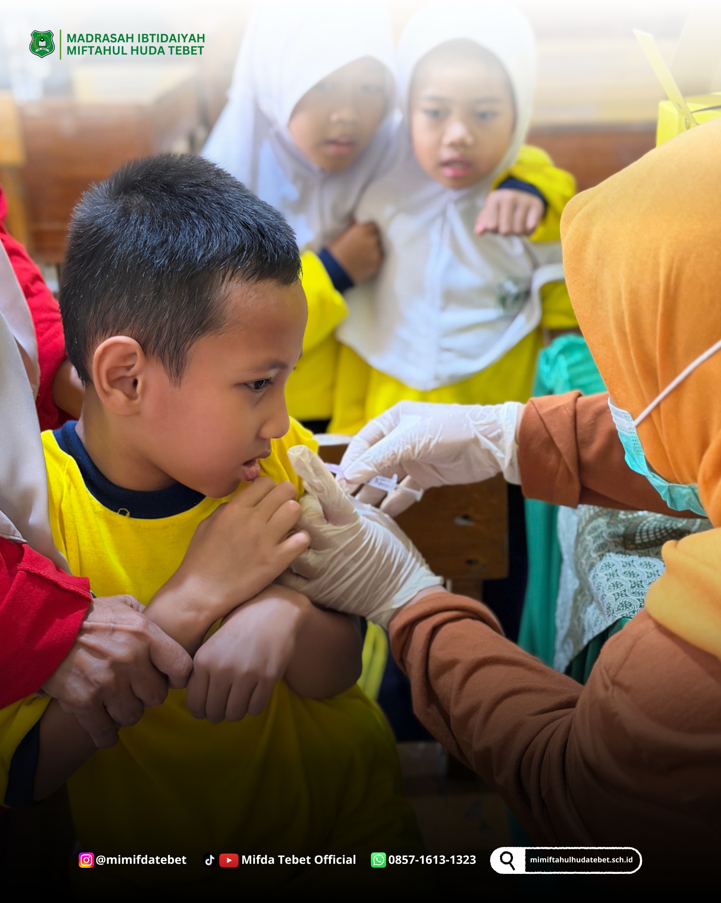
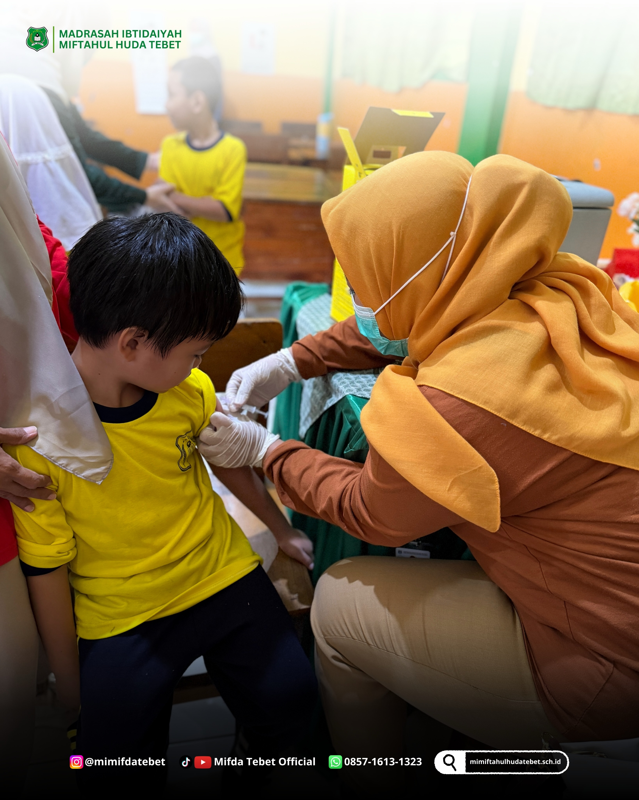
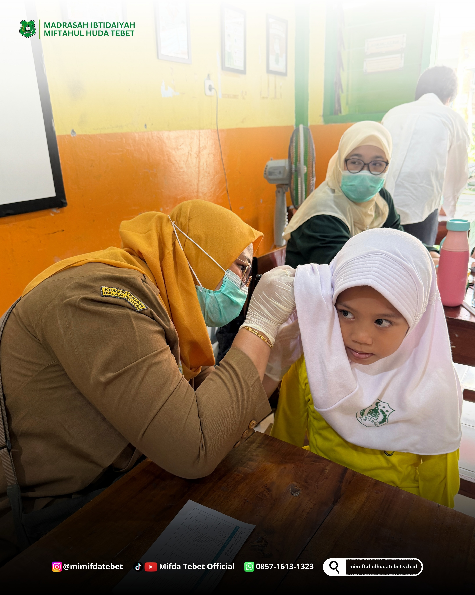

01
Tahfidz & Tahsin
Membiasakan anak mencintai Al-Qur'an.

MADRASAH IBTIDAIYAH · TEBET
MI MIFDA adalah ruang belajar yang hangat untuk bertumbuh dalam iman, ilmu, dan prestasi.


TENTANG MI MIFDA
MI MIFDA Tebet mendampingi anak-anak untuk mengenal ilmu, menguatkan karakter, serta membiasakan nilai Islam dalam keseharian.
Ikuti kegiatan kami di Instagram ↗PROGRAM UNGGULAN
Program yang mendukung tumbuh kembang akademik, karakter, serta kepercayaan diri siswa.

Membiasakan anak mencintai Al-Qur'an.

Menguatkan fondasi belajar yang menyenangkan.

Melatih disiplin, mandiri, dan peduli.

Belajar kreatif dengan teknologi yang tepat.
KEGIATAN SISWA

PRESTASI TERBARU
MI MIFDA memberi dukungan agar anak berani mencoba dan bangga terhadap prosesnya.
GALERI MI MIFDA

PENERIMAAN PESERTA DIDIK BARU
Temukan informasi pendaftaran dan ketentuan PPDB MI MIFDA Tahun Pelajaran 2026-2027.